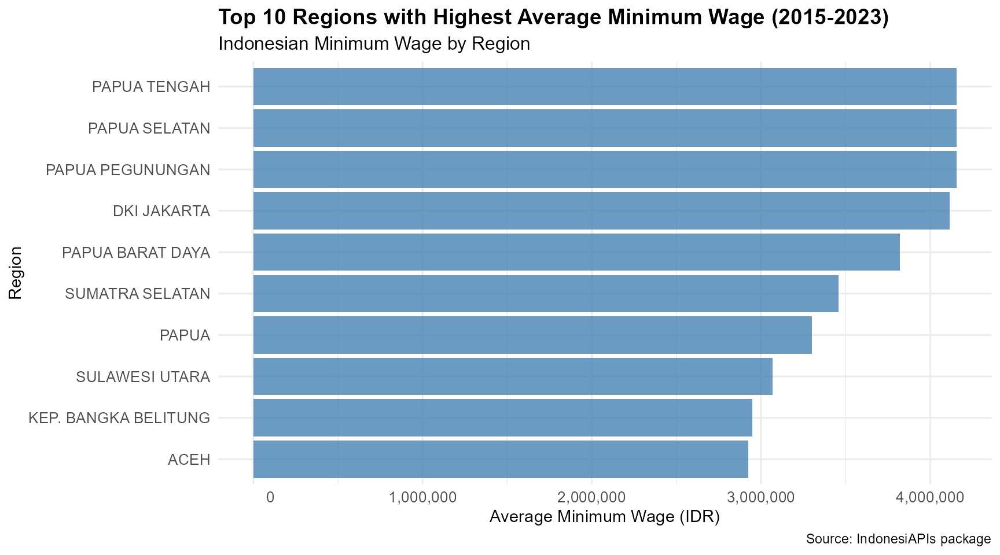

IndonesiAPIs: Access Indonesian Data via Public APIs and Curated Datasets
Source:vignettes/IndonesiAPIs_vignette.Rmd
IndonesiAPIs_vignette.Rmd
library(IndonesiAPIs)
library(ggplot2)
library(dplyr)
#>
#> Attaching package: 'dplyr'
#> The following objects are masked from 'package:stats':
#>
#> filter, lag
#> The following objects are masked from 'package:base':
#>
#> intersect, setdiff, setequal, unionIntroduction
The IndonesiAPIs package provides a unified interface to
access open data from the World Bank API,
Nager.Date API, and the REST Countries
API, with a focus on Indonesia. It allows
users to retrieve up-to-date or historical information on topics such as
economic indicators, population statistics, national holidays, and basic
geopolitical details.
In addition to API-access functions, the package includes a curated collection of open datasets related to Indonesia. These datasets cover a wide range of topics including consumer prices, poverty probability, food prices by region, tourism destinations, and minimum wage statistics.
IndonesiAPIs is designed to support users working with
data related to Indonesia by integrating international
RESTful APIs with structured and reliable datasets from public,
academic, and governmental sources into a single, easy-to-use R
package.
Functions for IndonesiAPIs
The IndonesiAPIs package provides several core functions
to access real-time and structured information about
Indonesia from public APIs such as the World
Bank API, Nager.Date, and the REST
Countries API. Below is a list of the main functions included
in the package:
get_indonesia_child_mortality(): Get Under-5 Mortality Rate in Indonesia from World Bankget_indonesia_cpi(): Get Indonesia’s Consumer Price Index from World Bankget_indonesia_energy_use(): Get Indonesia’s Energy Use (kg of oil equivalent per capita) from World Bankget_indonesia_gdp(): Get Indonesia’s GDP (Current US$) from World Bankget_indonesia_holidays(): Get official public holidays in Indonesia for a given year, e.g. get_indonesia_holidays(2025)get_indonesia_hospital_beds(): Get Hospital Beds per 1,000 People in Indonesia from World Bankget_indonesia_life_expectancy(): Get Indonesia’s Life Expectancy at Birth from World Bankget_indonesia_literacy_rate(): Get Indonesia’s Literacy Rate (Age 15+) from World Bankget_indonesia_population(): Get Indonesia’s Total Population from World Bankget_indonesia_unemployment(): Get Indonesia’s Unemployment Rate from World Bankget_country_info_idn(): Get Key Country Information About Indonesia from the REST Countries APIview_datasets_IndonesiAPIs(): View Available Datasets in IndonesiAPIs
These functions allow users to access high-quality and structured
information on Indonesia, which can be combined with
tools like dplyr and ggplot2 to
support a wide range of data analysis, visualization, and research
tasks. In the following sections, you’ll find examples on how to work
with IndonesiAPIs in practical scenarios.
Indonesia’s GDP (Current US$) from World Bank 2022 - 2017
indonesia_gdp <- head(get_indonesia_gdp())
print(indonesia_gdp)
#> # A tibble: 6 × 5
#> indicator country year value value_label
#> <chr> <chr> <int> <dbl> <chr>
#> 1 GDP (current US$) Indonesia 2022 1.32e12 1,319,101,183,380
#> 2 GDP (current US$) Indonesia 2021 1.19e12 1,186,509,691,087
#> 3 GDP (current US$) Indonesia 2020 1.06e12 1,059,054,842,698
#> 4 GDP (current US$) Indonesia 2019 1.12e12 1,119,099,871,350
#> 5 GDP (current US$) Indonesia 2018 1.04e12 1,042,271,532,989
#> 6 GDP (current US$) Indonesia 2017 1.02e12 1,015,618,744,160Indonesia’s Life Expectancy at Birth from World Bank 2022 - 2017
indonesia_life_expectancy <- head(get_indonesia_life_expectancy())
print(indonesia_life_expectancy)
#> # A tibble: 6 × 4
#> indicator country year value
#> <chr> <chr> <int> <dbl>
#> 1 Life expectancy at birth, total (years) Indonesia 2022 70.9
#> 2 Life expectancy at birth, total (years) Indonesia 2021 67.5
#> 3 Life expectancy at birth, total (years) Indonesia 2020 68.8
#> 4 Life expectancy at birth, total (years) Indonesia 2019 70.3
#> 5 Life expectancy at birth, total (years) Indonesia 2018 70.1
#> 6 Life expectancy at birth, total (years) Indonesia 2017 70.0Indonesia’s Total Population from World Bank 2022 - 2017
indonesia_population <- head(get_indonesia_population())
print(indonesia_population)
#> # A tibble: 6 × 5
#> indicator country year value value_label
#> <chr> <chr> <int> <int> <chr>
#> 1 Population, total Indonesia 2022 278830529 278,830,529
#> 2 Population, total Indonesia 2021 276758053 276,758,053
#> 3 Population, total Indonesia 2020 274814866 274,814,866
#> 4 Population, total Indonesia 2019 272489381 272,489,381
#> 5 Population, total Indonesia 2018 269951846 269,951,846
#> 6 Population, total Indonesia 2017 267346658 267,346,658Top 10 Regions with Highest Average Minimum Wage (2015-2023)
# Bar chart with better formatted x-axis
indonesia_minwage_tbl_df %>%
filter(YEAR >= 2015) %>%
group_by(REGION) %>%
summarise(avg_salary = mean(SALARY, na.rm = TRUE), .groups = 'drop') %>%
arrange(desc(avg_salary)) %>%
slice_head(n = 10) %>%
ggplot(aes(x = reorder(REGION, avg_salary), y = avg_salary)) +
geom_col(fill = "steelblue", alpha = 0.8) +
coord_flip() +
scale_y_continuous(
labels = function(x) format(x, big.mark = ",", scientific = FALSE)
) +
labs(
title = "Top 10 Regions with Highest Average Minimum Wage (2015-2023)",
subtitle = "Indonesian Minimum Wage by Region",
x = "Region",
y = "Average Minimum Wage (IDR)",
caption = "Source: IndonesiAPIs package"
) +
theme_minimal() +
theme(
plot.title = element_text(size = 14, face = "bold"),
plot.subtitle = element_text(size = 12),
axis.text = element_text(size = 10),
axis.title = element_text(size = 11)
)
Dataset Suffixes
Each dataset in IndonesiAPIs is labeled with a
suffix to indicate its structure and type:
_df: A standard data frame._tbl_df: A tibble data frame object.
Datasets Included in IndonesiAPIs
In addition to API access functions, IndonesiAPIs offers
a curated collection of open datasets focused on
Indonesia. These preloaded datasets cover a wide range
of topics including consumer prices, poverty probability, food prices by
region, tourism destinations, and minimum wage statistics. Below are
some featured examples:
Bali_tbl_df: A tibble containing food price data in Bali, Indonesia.indonesia_minwage_tbl_df: A tibble containing monthly minimum wage or Upah Minimum Regional (UMR) data in Indonesian Rupiah (IDR) across various regions of Indonesia from 1997 to 2025.DKIJakarta_tbl_df: A tibble containing food price data in DKI Jakarta, Indonesia.
Conclusion
The IndonesiAPIs package offers a unified interface for
accessing both real-time data from public APIs and a curated collection
of datasets about Indonesia. Covering a wide spectrum
of topics from economic indicators, holidays, and demographic statistics
via international APIs, to detailed datasets on consumer prices, poverty
probability, food prices by region, tourism destinations, and minimum
wage statistics, IndonesiAPIs provides users with reliable,
structured, and high-quality data.
Designed to support reproducible research, education, and data journalism, the package empowers users to analyze and visualize Indonesia-focused data directly within R, using tidy formats and well-documented sources.